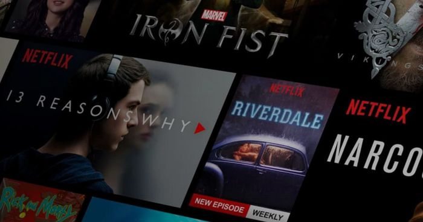

May 25, 2018 - 16:00 (CET)
Movistar, Netflix y Amazon ostentan el top 3 de las plataformas con más usuarios en España, que crece a un ritmo imparable desde hace un par de años.

Netflix y Telefónica han anunciado un acuerdo histórico para integrar sus plataforma y con clara intención para aumentar su base de clientes, lo que no quiere decir que el servicio de streaming esté falto de usuarios en nuestro país, puesto que según los últimos datos, Netflix ya tiene cerca de un millón y medio de suscriptores en España.
La cifra puede parecer pequeña respecto a sus suscriptores de los servicio de cable de las operadoras, pero lo cierto es que en número brutos, los abonados de Netflix ya representan el 9,1% del total de hogares que disponen de acceso a internet y que usa servicios de pago para ver contenido a través de servicios de streaming.
Los números de Netflix en España se ha triplicado en el último año, tanto que ahora queda segunda por detrás del número de los servicios audiovisuales de pago, que a día de ostenta Movistar con cerca de 2,16 millones de hogares que utilizan su servicio, cerca de un 13,5% del total de los hogares con acceso a la red y a servicios de streaming. Lejos de esta cifra se sitúa Amazon Prime Vídeo, con un 3,5% del total y 560.000 usuarios abonados, un cifra un tanto escasa en tanto que está incluida su oferta dentro de servicio de Amazon Prime.
Sea como sea, parece que los Españoles han abrazado el streaming en detrimento de los servicios no legales de contenido, pero todavía hay mucho espacio en el mercado para que todas estas empresas de streaming sigan creciendo a buen ritmo, ahora que parece que los acuerdos entre operadoras y OTTs están a la orden del día.
Parodia publicitaria de Netflix: